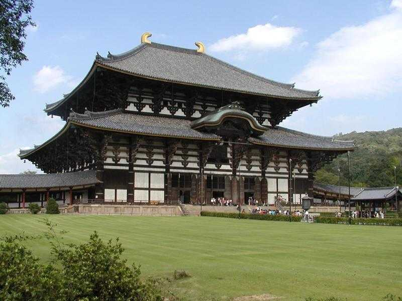
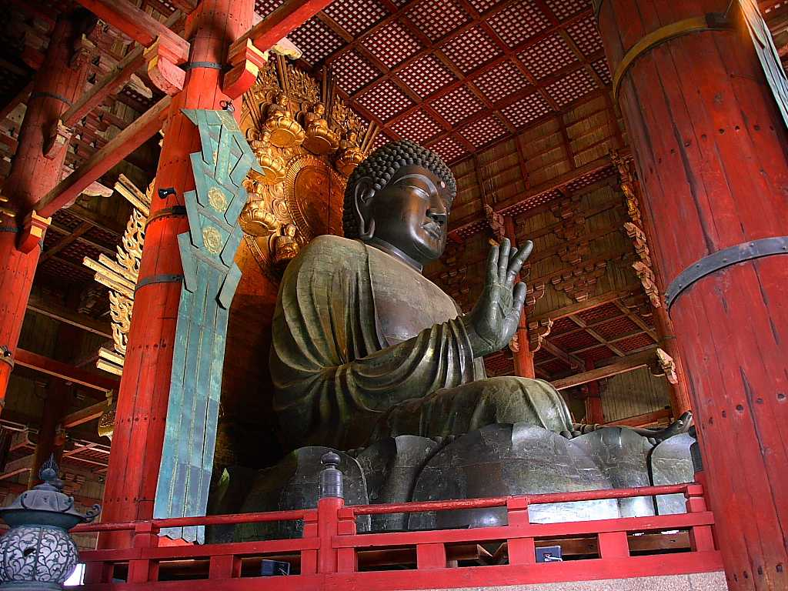
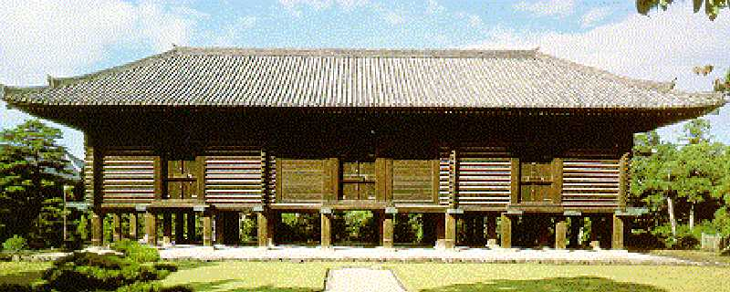

Tōdai ji Daibutsu den 東大寺 大仏殿(金堂)
東大寺は７３３年に金鐘寺として若草山麓に創建された

東大寺盧舎那仏像は７４５年に制作が開始され７５２年に開眼供養会が行われたものでその金堂は２回の火災にあい１７０８年に再建された現存する世界最大の木造建築物で 高さ４７ｍ幅５７ｍ奥行５０ｍ瓦１３万枚を使用している その大きさに圧倒されるとともに維持管理技術に驚かされる

Shōsō in 正倉院
正倉院の宝物は貴重でそれが創られた地では侵略や戦火により失われているが日本ではそれらが保存され見ることができる

 AI解説
AI解説